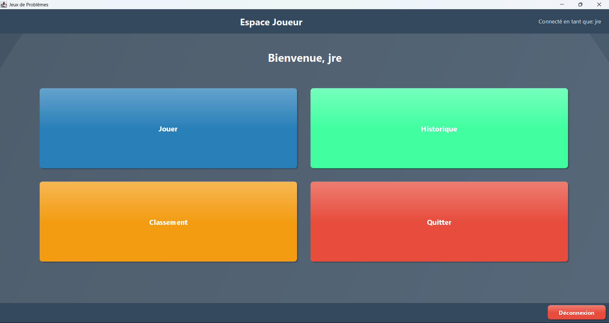
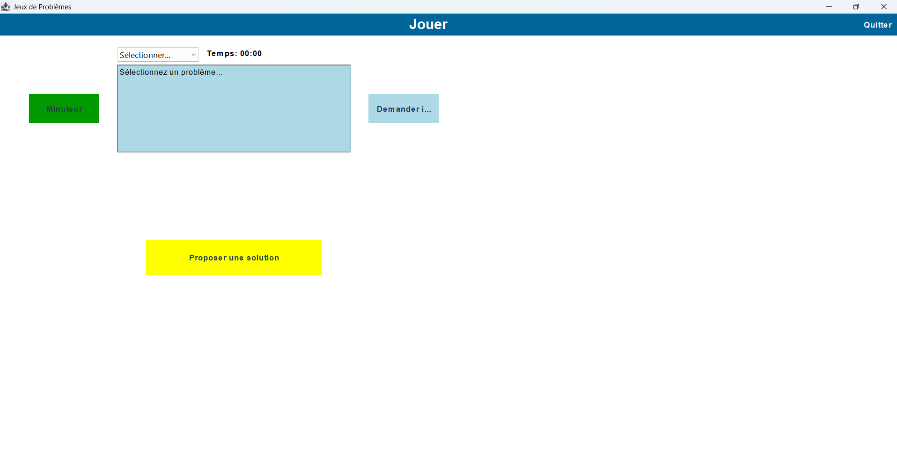
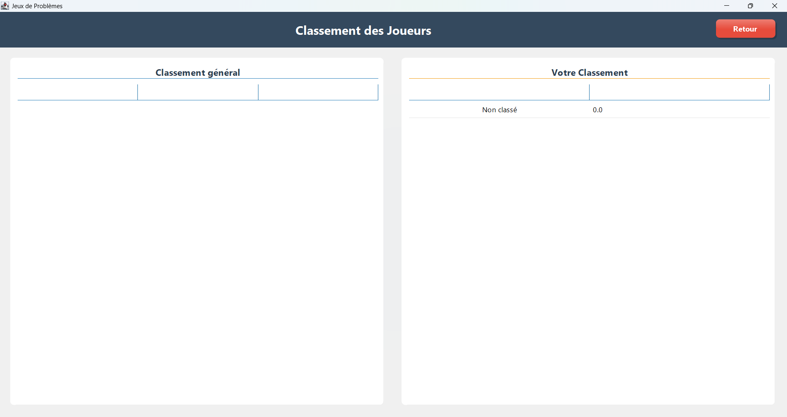
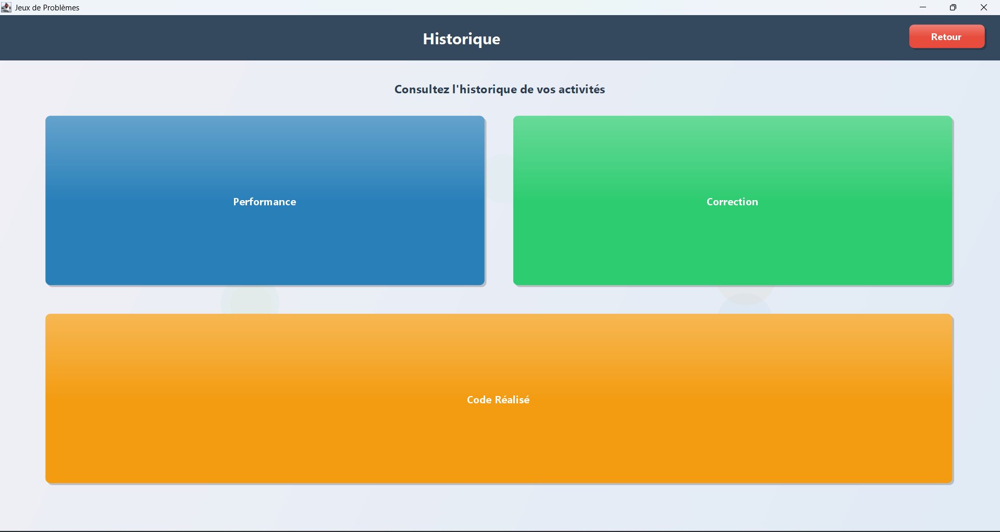

Screenshots du Projet

Page d'accueil
Interface d'accueil avec les options principales du jeu

Interface de jeu
Zone de jeu avec les problèmes de programmation et éditeur de code

Classement
Tableau des meilleurs scores et classement des joueurs

Historique
Historique des parties jouées et statistiques